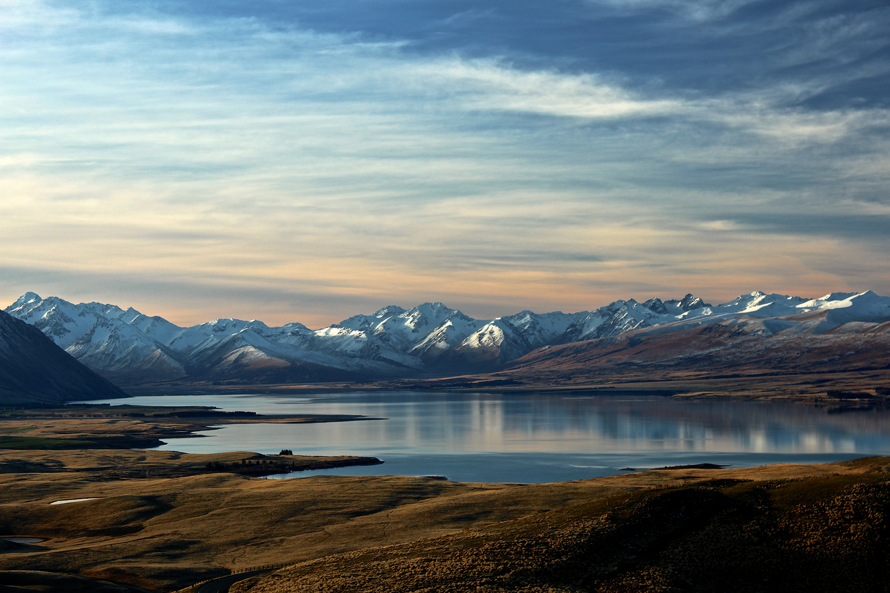
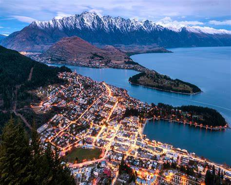
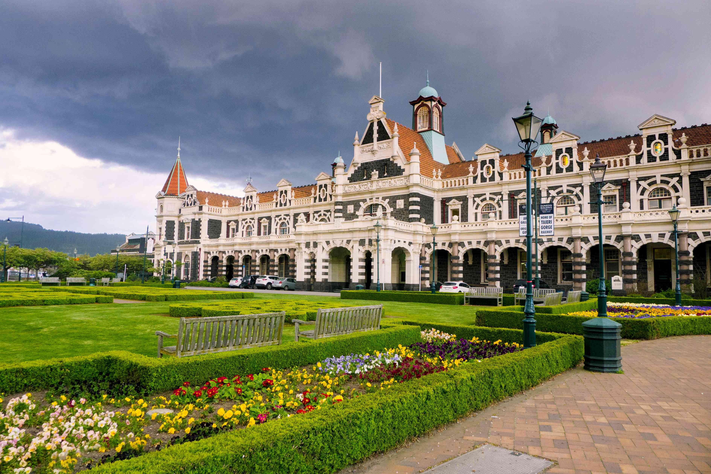
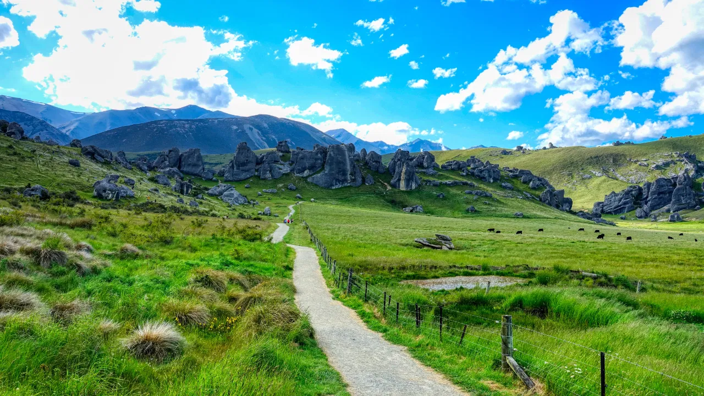
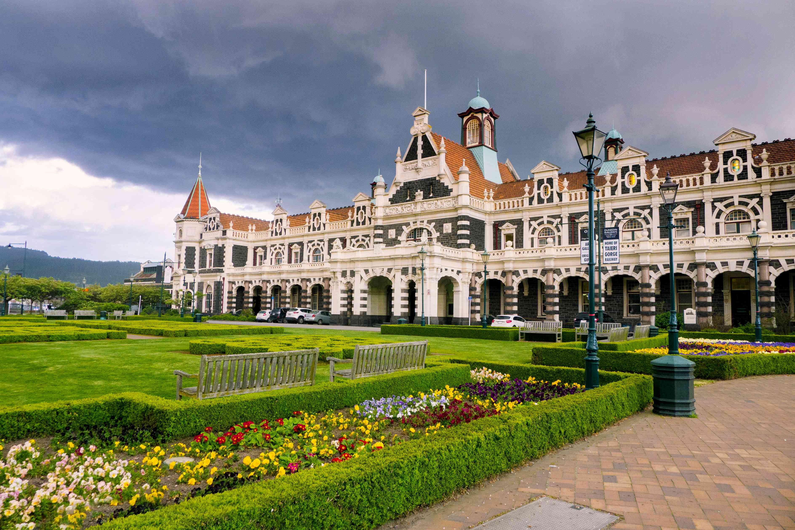
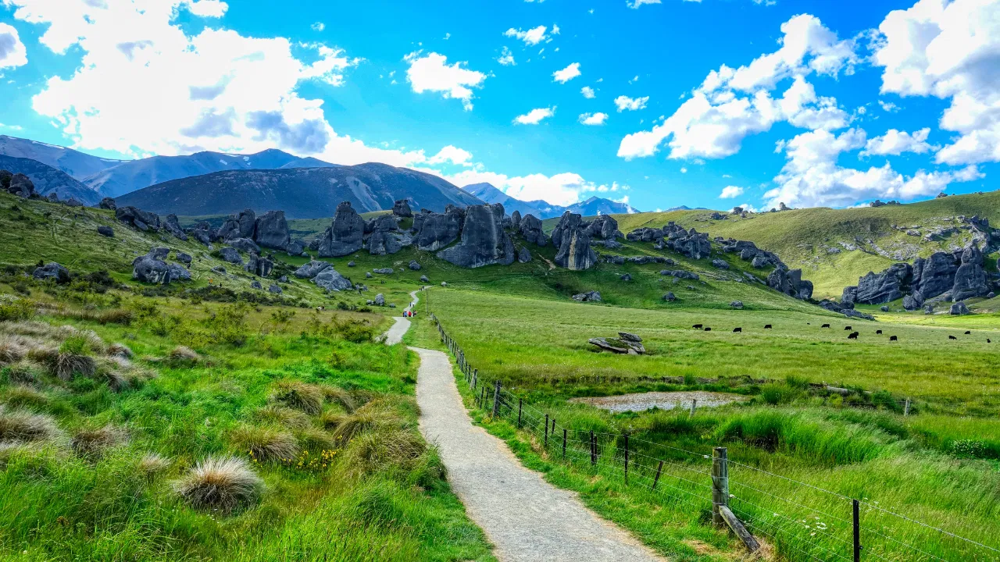

New Zealand
 
 



Why It’s Special: New Zealand is a paradise for nature lovers, with breathtaking mountains, fjords, and stunning coastlines. I’ve always dreamed of visiting because of its untouched beauty—it almost feels like another world.
How to Get There: Fly from the Philippines to Auckland, Wellington, or Christchurch.
Other Places to Visit: Queenstown, Rotorua, Milford Sound, Wellington.